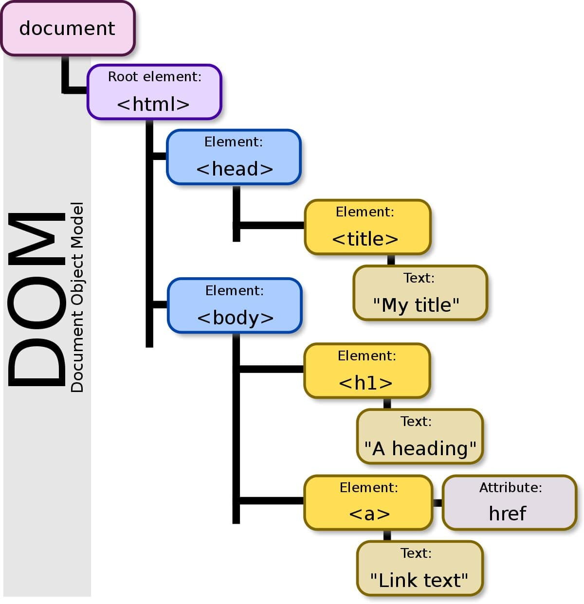

GUIA DE MANEJO GITHUB
Definición de GitHub
Es una forja (plataforma de desarrollo colaborativo) para alojar proyectos
utilizando el sistema de control de versiones Git. Se utilizas1
principalmente para la creación de código fuente de programas de
ordenador. El software que opera GitHub fue escrito en Ruby on Rails
principalmente para la creación de código fuente de programas de
ordenador. El software que opera GitHub fue escrito en Ruby on Rails
Desde enero de 2010, GitHub opera bajo el nombre de GitHub, Inc.
Anteriormente era conocida como Logical Awesome LLC. El código de los proyectos alojados en GitHub se almacena típicamente de forma pública, aunque utilizando una cuenta de pago, también permite hospedar repositorios privados.
¿Qué es un sistema de control de versiones?
Cuando los desarrolladores hacen un nuevo proyecto, siempre continúan haciéndole modificaciones al código. Incluso después de la puesta en marcha de los proyectos, todavía necesitan actualizar las versiones, corregir errores, agregar nuevas funciones, etc.
El sistema de control de versiones ayuda a registrar los cambios realizados al código. Aún más, registra quién realizó los cambios y puede restaurar el código borrado o modificado.
No hay códigos sobrescritos ya que Git guarda varias copias en el repositorio.
Repository
Un repositorio o “repo” es un directorio donde se almacenan los archivos de tu proyecto. Puede estar ubicado en el almacenamiento de GitHub o en un repositorio local en tu computadora. Puedes almacenar archivos de código, imágenes, audios o todo lo relacionado con el proyecto en el repositorio.
Branch
Branch, que se traduce como rama, es una copia de tu repositorio. Puedes utilizar la rama cuando quieras hacer un desarrollo de forma aislada.
Trabajar en una rama no afectará el repositorio central u otras ramas. Si has completado el trabajo, puedes combinar tu rama con otras ramas y con el repositorio central mediante una pull request.
Pull Request
Pull request significa que les informas a los demás que has enviado al repositorio principal el cambio que hiciste en una rama. Los colaboradores del repositorio pueden aceptar o rechazar una pull request. Una vez abierta, puedes discutir y revisar tu trabajo con los colaboradores.
Sigue estos pasos para crear una pull request en GitHub:
Ve al repositorio y busca el menú Branch.
En el menú Branch, elige la rama que contenga tu aporte.
Haz clic en el botón New pull request al lado del menú Branch.
Escribe el título y la descripción de tu pull request.
Pulsa el botón Create pull request.
1
necesita una cuenta de GitHub.com y acceso a internet (el software de control de versiones en el que se basa GitHub)
GITHUB
Para crear un nuevo repositorio
- en la esquina superior derecha, junto a su avatar o icono de identificaciòn, haga clic en + y luego se seleccione NUEVO REPOSITORIO.
- nombra tu repositorio
- escribe una breve descripcion.
- seleccione INICIALIZAR ESTE REPOSITORIO CON UN ARCHIVO README
Definicion de MOD
El DOM que se refiere al Document Object Model,
no es más que una representación de objetos de los elementos
que están en nuestro documento HTML, gracias a esto podemos
hacer una conexión más profunda con Javascript y logra efectos
muy interesantes; sin embargo para llegar a ese nivel primero
debemos conocer muy bien cómo manejarnos dentro del DOM para
su implementación y utilización.
HTML Image

Comandos básicos de GIT
Cuando hablamos de controlar la versión de sistemas hay muy pocos que
hagan el estupendo trabajo que hace GIT, tanto en rendimiento como en
predominio. GIT fue desarrollado por Linus Torvalds en el 2005 y hoy en
día, millones de compañías lo usan como un eficiente administrador de
código y control de versiones en sus proyectos.
Este software de código abierto se puede descargar tanto para Linux,
Windows, Mac y Solaris, y en este tutorial aprenderás los comandos básicos
de GIT para sacarle el mejor provecho
Integración de GitHub
empieza a crear tus repositorios HTML Links
GitHub
Definir los comandos
Con lo cual podemos descargar estas ayudas
visual
HTML Links
Git
HTML Image

definicion